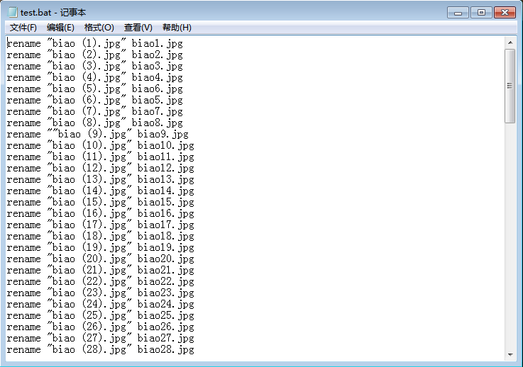
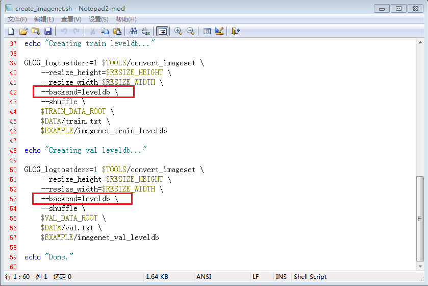

由于网上一幅一幅图片下载非常麻烦，所以我干脆下载了两个eif表情包。同一个表情包里的图像都有很强的相似性，因此可以当成一类图像来使用。下载个eif解压包可以把eif文件解压成gif和jpg格式的文件，然后删除gif文件，只留下jpg格式的文件，这些图就是我的训练集与测试集了。
（1）对于一个存放了图像src.jpg的文件夹ROOT，在ROOT中新建一个test.txt文件，在里面写下“rename src.jpg dst.jpg”，然后将该txt后缀名改为bat，双击test.bat，即可将src.jpg重命名为dst.jpg。
（2）利用上一次博客中说过的方法，将ROOT文件夹下所有的文件名皆存入一个txt文件中，即可方便地将ROOT文件夹下所有的图像都重命名。
（3）举一个例子。重命名前的ROOT下是这样的：
参考《CAFFE学习笔记（四）》的内容，得到一个装了ROOT文件夹下所有文件名的txt文件，稍加查找与替换，得到如下的txt文件：
后缀名改成bat后再运行，得到的结果如下图所示。并没有全部转成功，估计是因为文件名里这些乱七八糟的符号中的一部分是不被test.bat认可的。
没有办法，只能先把上面这些符号改整齐了。将上面的图像全选，对第一个文件重命名成“biao.jpg”，也就是最简单的那种统一重命名法，则会出现如下情况：
但是这里的名称有空格也有括号，我担心会对caffe的训练造成影响，所以还是得用test.bat把文件名全部转成“biaoX.jpg”。
这里应该提出一点，当文件名中含空格时，是无法直接用刚才的“rename src.jpg dst.jpg”的方法令它重命名成功的。解决方案是在test.bat文件中用双引号将含空格的src.jpg括起来，即：
rename “src.jpg” dst.jpg正如下图所示，应使用双引号将含空格的src.jpg全都括起来。

而这一次就全部转换成功了。
（4）刚才获取的是第一套jpg库“表情猫”，现在我们获取第二套jpg库“真猫”。上面制作的这个test.bat文件很有用，可以使用查找与替换功能把里面的“biao”换成“zhen”，然后粘贴到“真猫”的文件夹下：
于是瞬间就能重命名另一套jpg数据库：
应该注意，这两个txt文件具体应该怎么填写，要和train、val文件夹里是怎么放图像的一一对应起来。
以我的为例，我的train文件夹里还有两个子文件夹，一个叫“zhen”（里面放了50张真猫），一个叫“biao”（里面放了50张表情猫）：
于是对应的train.txt还要指明各幅图像所在的子文件夹是哪一个。
同理，我的val文件夹没有放子文件夹，而是直接里面就有20张测试图：
因此对应的val.txt也不必指明子文件夹。
实际上train.txt与val.txt存放的正是各幅图像的“相对路径+label”。
阅读本部分内容前请先参考《CAFFE学习笔记（四）将自己的数据转成lmdb格式》，本次博客将在它的基础上对最后那三个疑难问题提出解决方案，并生成能用的leveldb格式文件。
如果打开lmdb文件的文件夹可以发现，按以上方法所生成的lmdb文件只有8KB这么小（事实上不论是lmdb还是leveldb都是对图片集的打包，lmdb或leveldb文件的大小应该和训练集、测试集大小差不多才对），这说明在“利用create_imagenet.sh生成lmdb文件”这一步并没有把训练集和测试集打包成功。
这便是上一次博客中那三个遗留问题中3-2的答案，也就是说输入数据有问题。所生成的lmdb文件是无效的，这就是为什么拿这样的lmdb文件去训练会失败了。
lmdb文件打包失败的标志是会在运行create_imagenet.sh时出现：
Check failed: mdb_status == 0 (112 vs. 0)在网上找了很久，最后在一个CSDN的提问上看到，有人说是因为windows下不能使用lmdb数据格式，因此应该在create_imagenet.sh这一步设置令生成leveldb文件。
这就是对上一次博客最后的3-1的解答，只要出现这样的错误提示，就意味着你的lmdb数据是不能用的了。我不知道是不是只有windows系统会出现这样的问题，总而言之这错误的解决方案就是不要再生成lmdb格式文件了，而是设定create_imagenet.sh使之生成leveldb格式的文件。
现在来解决上一次博客中的3-3。如我们所知，在caffe中默认的数据格式是lmdb，因此在上一次博客中无须指定生成的是lmdb还是leveldb，create_imagenet.sh就会自动生成lmdb格式的文件。但是刚才也说了，windows下是不能用lmdb格式文件的（能不能用不知道，反正我在将jpg图打包成lmdb格式文件这一步就会出错），因此需要对create_imagenet.sh进行一些设置，让它把jpg图打包成leveldb格式的文件。
方法是在create_imagenet.sh文件中加入下面一行语句：
--backend=leveldb如图所示，将这行语句加在下图中的位置，即可指定令create_imagenet.sh生成leveldb格式的文件，不要忘记后面的反斜杠。

本部分工作将在CAFFE_ROOT/data/myself中执行，其中myself是我自己新建的文件夹，里面放了全部的训练数据train，全部的测试数据val，以及给出了各训练数据与测试数据标签的txt文件train.txt、val.txt。
在执行create_imagenet.sh后，myself文件夹中将新增两个文件夹imagenet_train_leveldb与imagenet_val_leveldb，这就是所生成的leveldb文件。
按照《CAFFE学习笔记（三）在VS2013下生成需要的exe文件》中的步骤，将tools文件夹下的compute_image_mean.cpp文件加载到caffe的VS2013工程中去，然后生成一个compute_image_mean.exe。
不过这里注意，build后生成的名称是Caffe.exe，为了使得下一次build别的cpp文件时该compute_image_mean.cpp文件能够不被抹除，应该将compute_image_mean.cpp生成的这个Caffe.exe重命名为compute_image_mean.exe。
在CAFFE_ROOT/examples/imagenet下有一个sh文件make_imagenet_mean.sh，将它拷贝到CAFFE_ROOT/data/myself中，然后打开这个文件进行编辑。
应注意，这里默认的也是对lmdb文件求平均值，因此必须指定“是对leveldb文件求平均值”。如果不加这句，则会出现“check failure”。
当执行完make_imagenet_mean.sh后，将会在CAFFE_ROOT/data/myself下生成一个文件imagenet_mean.binaryproto。
这一节的内容请一定要联系《CAFFE学习笔记（一）Caffe_Example之训练mnist》，本次博客所使用的网络虽然和lenet有所不同，多出一个“设置平均值文件路径”（即刚才生成的imagenet_mean.binaryproto），不过大体的流程是一样的，都是需要设置“两个prototxt文件+一个sh文件”。
应说明，在“网络定义”这一步，薛开宇的笔记上记录的并不是这个文件，他是从CAFFE_ROOT\examples\imagenet中拷贝了两个文件imagenet_train.prototxt和imagenet_val.prototxt分别用于训练网络和测试网络。按照他笔记上的描述，我可以推断我用的train_val.prototxt实际上是imagenet_train.prototxt和imagenet_val.prototxt的合体。
为什么用的和他不一样？因为我在我的CAFFE_ROOT\examples\imagenet中根本找不着imagenet_train.prototxt和imagenet_val.prototxt，于是去Caffe的官网搜寻一番，发现Caffe官网中examples\imagenet里也一样没有那两个prototxt文件。而官网的Imagenet这个例子后却有这样一段描述：
We are going to describe a reference implementation for the approach first proposed by Krizhevsky, Sutskever, and Hinton in their NIPS 2012 paper.
The network definition
( models/bvlc_reference_caffenet/train_val.prototxt ) follows the one in Krizhevsky et al.
根据括号中给定的路径可以查到该train_val.prototxt文件，把它拷贝到一个txt文件中，后缀名改成prototxt即可。
现在我们来编辑该train_val.prototxt文件，就像在《CAFFE学习笔记（一）Caffe_Example之训练mnist》中做的那样，设置imagenet_train_leveldb和imagenet_val_leveldb路径，除此之外还要把刚才计算好的平均值文件imagenet_mean.binaryproto的路径也一并设置。
千万注意默认的backend是LMDB，我们得改成LEVELDB才行。
这个文件同样无法在CAFFE_ROOT\examples\imagenet中找到，和上面类似，在Caffe官网的Imagenet这个例子中得到solver的路径：
Sound good? This is implemented in
models/bvlc_reference_caffenet/solver.prototxt.
现在设置solver如下：
其中net是train_val.prototxt的路径，snapshot_prefix是训练好的网络权值的存放路径，还有就是用CPU还是GPU也在此处指定。
这个文件倒是确实能在CAFFE_ROOT/examples/imagenet中找到，把它拷贝到myself中，设置如下：
其实就是设置三个东西：
（1）Caffe.exe——也就是用于训练网络的可执行文件，它是tools下caffe.cpp文件build而成的。
（2）train——模式选择，意思是现在是训练模式。
（3）solver——即刚才设置好的solver.prototxt文件的路径。
这一部分内容与《CAFFE学习笔记（一）Caffe_Example之训练mnist》中的设置是完全一样的。
在设置完train_caffenet.sh后，就开始训练网络了，速度奇慢……基本上是每个小时出给一次当前loss汇报。
不过可以看出，随着迭代次数增加，loss越来越小（其实可以看出来迭代20次后就能用了），而这正是我们希望的。
2016.5.26
by 悠望南山

文章评论